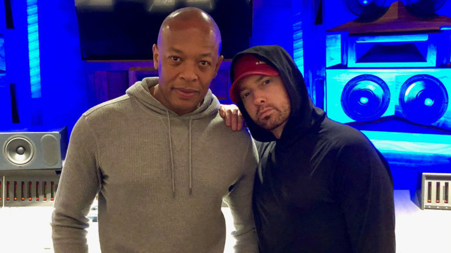

19 de novembro de 2020
Dr. Dre não é apenas um dos maiores produtores de todos os tempos, mas também conquistou a reputação de maior perfeccionista do hip-hop. Como tal, levou a uma discografia relativamente limitada, possuindo três álbuns solo lançados em 1993, 1999 e 2016. Ao mesmo tempo, projetos como o lendário Detox e até mesmo o breve álbum instrumental Planets foram eternamente guardado no cofre da sua gravadora Aftermath.
Então, por que haveria alguma razão para acreditar que Dre está se preparando para lançar um novo álbum? Acontece que o rapper, ator e comediante de Detroit Page Kennedy ouviu algumas músicas novas de Dre, indo tão longe a ponto de indicar que há um álbum completo em andamento.
Depois que um fã pergunta por mais detalhes, especificamente relativos a um novo som com Eminem, Kennedy revela que Em está de fato presente no projeto. Nenhuma surpresa nisso, visto que Em e Dre têm trabalhado ativamente juntos ultimamente; desde Recovery 2010, Dr. Dre abençoou Eminem com novos instrumentais em Music To Be Murdered By.
Além disso, Dre foi visto em uma variedade artistas no estúdio recentemente, incluindo sessões com Xzibit, Busta Rhymes, Kanye West, Snoop Dogg e até mesmo Quavo. Se a informação estiver correta, Dre tem trabalhado dure em um quarto álbum de estúdio.